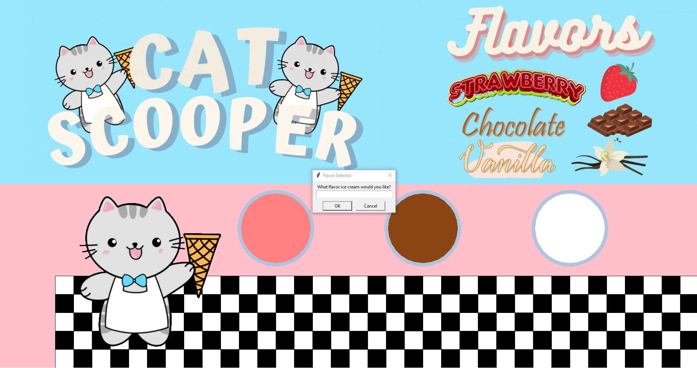
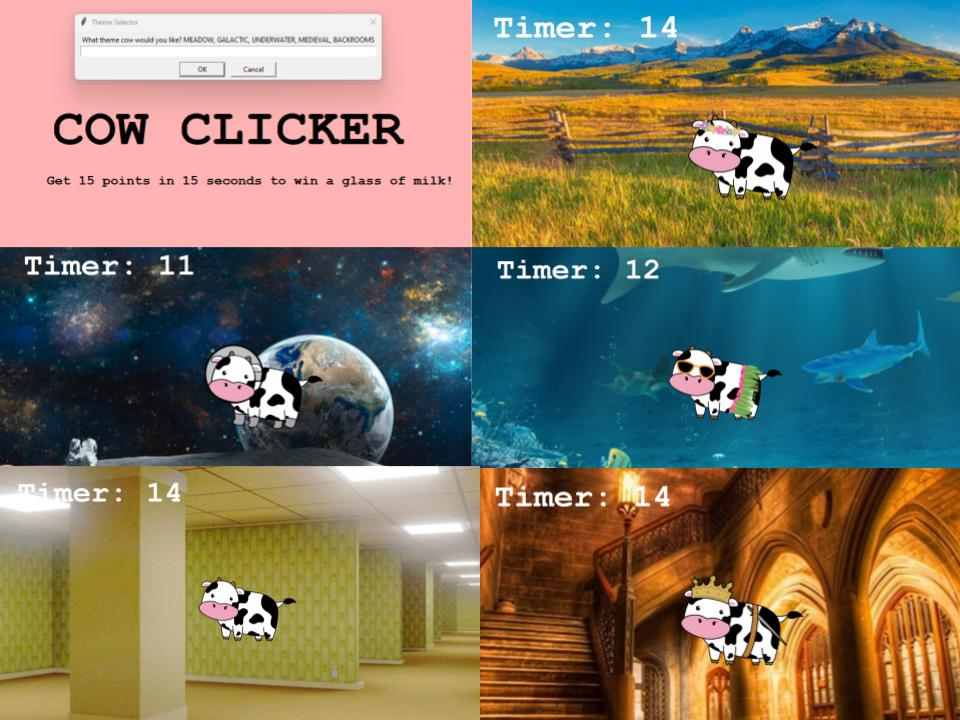
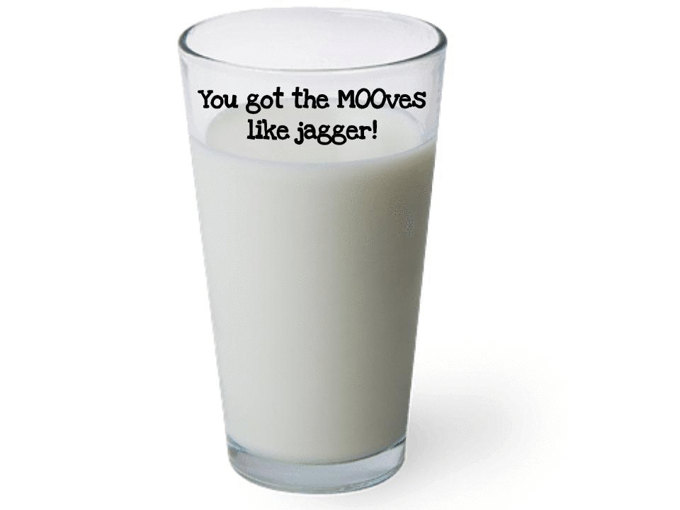
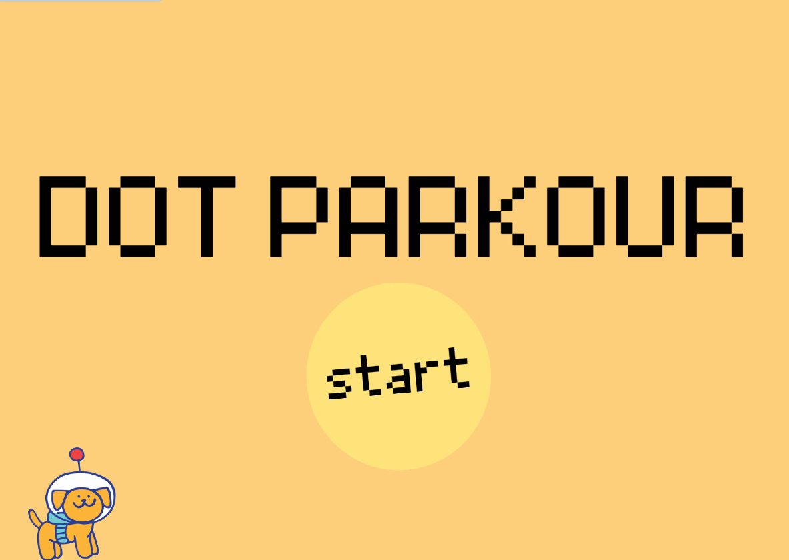
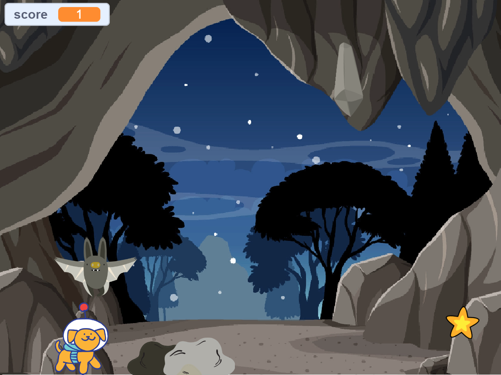
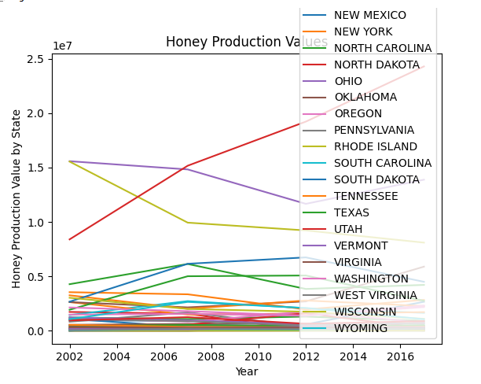
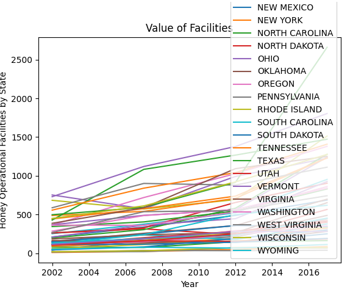
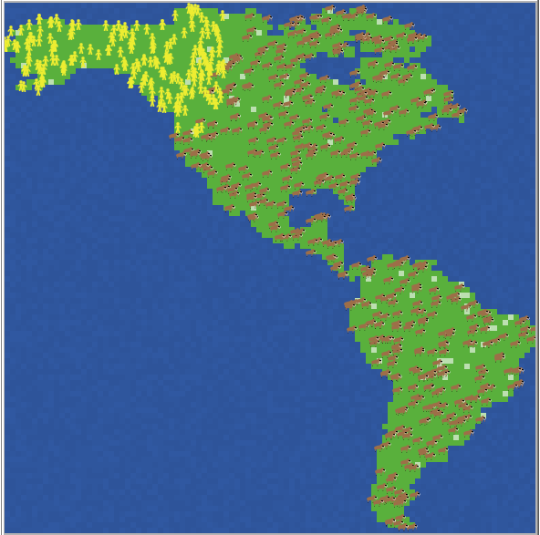
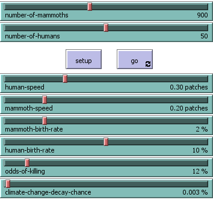
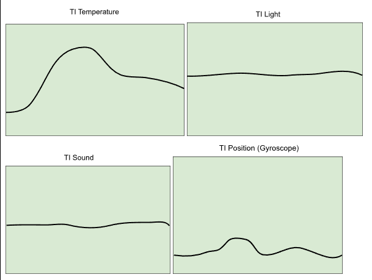

Portfolio
Home at Last
Portfolio
About Me
My Portfolio Page!
1.1.9 Cat Scooper!


A cat who owns an ice cream shop scoops a scoop of ice cream based on the user's flavor choice.
1.2.5 Cow Clicker!


Pick your cow theme and then try to score 15 points within 15 seconds to get a glass of milk, otherwise get a piece of turd...
Scratch: Dot Parkour!


Manuever through maps and obstacles to help Dot the dog collect stars in order for him to find his spaceship.
3.2.4 Honey as an Indicator!


Using data processing and graph visuals, we examined the honey production value sums per state by year along with the comparison of the value of facilities in each state by year.
4.1.4 Net Logo: Mammoths!


The mammoth simulation in Netlogo aimed to show the rapid extinction of mammoths due to both climate change and human population growth.
3.1.6 Rover Phone Home!

Using a set of uncleaned data, we analyzed the range values of sound, temperature, light, and position to determine what location the rover was in. We matched the data to each of the sensors and drew graphs based on where we believe the robot is.